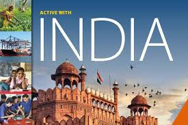
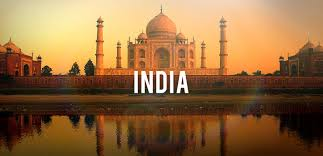
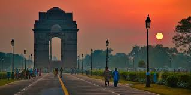

India is a vast South Asian country with diverse terrain – from Himalayan peaks to Indian Ocean coastline – and history reaching back 5 millennia. In the north, Mughal Empire landmarks include Delhi’s Red Fort complex and massive Jama Masjid mosque, plus Agra’s iconic Taj Mahal mausoleum. Pilgrims bathe in the Ganges in Varanasi, and Rishikesh is a yoga centre and base for Himalayan trekking.
 The Taj Mahal is an ivory-white marble mausoleum on the south bank of the Yamuna river in the Indian city of Agra. It was commissioned in 1632 by the Mughal emperor, Shah Jahan, to house the tomb of his favourite wife, Mumtaz Mahal. It also houses the tomb of Shah Jahan, the builder.
 India Gate is a memorial to 70,000 soldiers of the British Indian Army who died in the period 1914–21 in the First World War, in France, Flanders, Mesopotamia, Persia, East Africa, Gallipoli and elsewhere in the Near and the Far East, and the Third Anglo-Afghan War. 13,300 servicemen's names, including some soldiers and officers from the United Kingdom, are inscribed on the gate. The India Gate situated in Delhi,was part of the work of the Imperial War Graves Commission (I.W.G.C), which came into existence in December 1917 for building war graves and memorials to soldiers killed in the First World War.